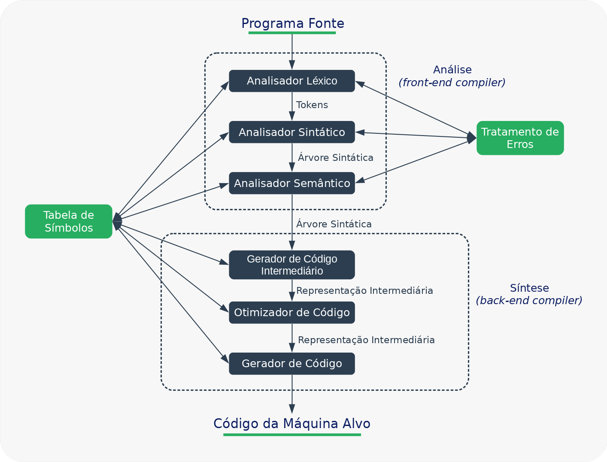
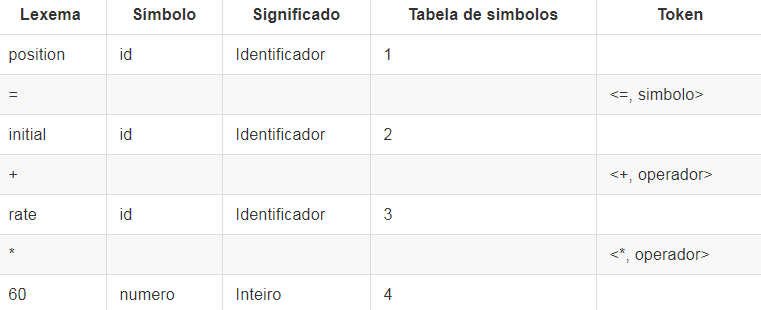
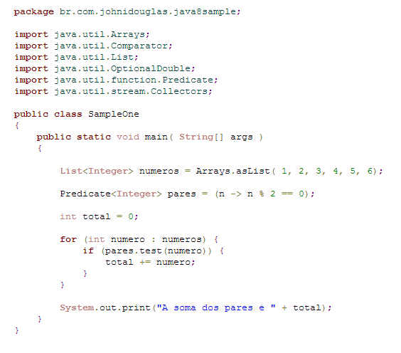

A análise léxica também conhecida como scanner ou leitura é a primeira fase de um processo de compilação e sua função é fazer a leitura do programa fonte, caractere a caractere, agrupar os caracteres em lexemas e produzir uma sequência de símbolos léxicos conhecidos como tokens. A sequência de tokens é enviada para ser processada pela analise sintática que é a próxima fase do processo de compilação . O analisador léxico deve interagir com a tabela de símbolos inserindo informações de alguns tokens, como por exemplo os identificadores. A nível de implementação a analise léxica normalmente é uma sub-rotina da análise sintática formando um único passo, porem ocorre uma divisão conceitual para simplificar a modularizarão do projeto de um compilador.
A análise léxica pode ser dividida em duas etapas, a primeira chamada de escandimento que é uma simples varredura removendo comentários e espaços em branco, e a segunda etapa, a analise léxica propriamente dita onde o texto é quebrado em lexemas.
Exemplo 1
printf("Total = %d\n", score)
printf e score são lexemas que casam com o padrão identificador. Total = %d\n é um lexema que casa com o padrão literal. () lexemas que auxiliam a identificação de uma função.
Exemplo 2
const PI = 3.1416
onde:
Os tokens podem ser divididos em dois grupos:
Onde o nome do token corresponde a uma classificação do token, por exemplo: numero, identificador, const. E o valor do atributo corresponde a um valor qualquer que pode ser atribuído ao token, por exemplo o valor de entrada na tabela de símbolos.
A análise léxica divide o código fonte em tokens que posteriormente são classificados de acordo com a classe no qual o token pertence. Toda classe tem uma descrição do que ela representa na linguagem de programação.
Veja as etapas para construir um analisador léxico:O Analisador sintático também conhecido como parser tem como tarefa principal determinar se o programa de entrada representado pelo fluxo de tokens possui as sentenças válidas para a linguagem de programação. A analise sintática e a segunda etapa do processo de compilação e na maioria dos casos utiliza gramáticas livres de contexto para especificar a sintaxe de uma linguagem de programação.
A sintaxe é a parte da gramática que estuda a disposição das palavras na frase e das frases em um discurso. Essa etapa no processo de compilação deve reconhecer as forma do programa fonte e determinar se ele é valido ou não.
Esse modelo pode ser definido utilizando gramáticas livres de contexto que representam uma gramática formal e pode ser escrita através de algoritmos fazem a derivação de todas as possíveis construções da linguagem.
Observe a estrutura sintática de uma linguagem de programação. Temos as divisões dos blocos, compostos por comandos, compostos por expressões.
Entende-se por regras gramáticas as formas como podemos descrever a estrutura sintática do programa. Veja um exemplo no diagrama abaixo demostrando esse processo de compilação visto das etapas estudadas até o momento.
As linguagens de programação em geral pertencem a uma categoria chamada de Linguagens Livres de Contexto. Umas das formas de representar essas linguagens é através de Gramáticas Livres de Contexto que são a base para a construção de analisadores sintáticos. Elas são utilizadas para especificar as regras sintáticas de uma linguagem de programação, uma linguagem regular pode ser reconhecida por uma automato finitos determinísticos e não determinísticos, já uma Gramatica Livre de Contexto pode ser reconhecida por um automato de pilha.
Outra aplicação de GLC são os DTD - Definição de Tipos de Documentos - utilizados por arquivos XML que descreve as tags de uma forma natural, as tags deve estar aninhas afim de lidar com o significado do texto.
Já o analisador sintático vê o mesmo texto como uma sequência de sentenças que deve satisfazer as regras gramaticais. É através da gramática que podemos validar expressões criadas na linguagem de programação.
Onde:
G = ({S}, {a, b}, P, S)
P = {
S → aSb
S → λ
}